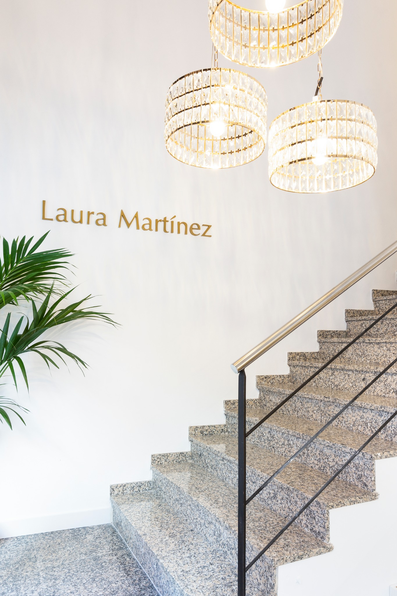

Facial
Analizamos tu piel, tus objetivos y sus necesidades antes de recomendar cualquier tratamiento.
Solicitar visitaResultados naturales · Precisión · Tecnología
Porque cuando te sientes eterna,
el mundo te percibe infinita.
Ser eterna no es detener el reloj, es hacer que cada segundo juegue a tu favor.
En nuestro centro, la tecnología y la ingeniería de la piel se fusionan con un único propósito: que tu belleza no sea efímera, sino un estado permanente.
No buscamos cambios temporales; diseñamos la mejor versión de ti misma para que tu seguridad, tu luz y tu esencia trasciendan.
Porque cuando te sientes eterna, el mundo te percibe infinita.

No partimos de un tratamiento concreto. Partimos de ti: primero realizamos un diagnóstico y, a partir de él, diseñamos el protocolo que realmente necesitas.
Analizamos tu piel, tus objetivos y sus necesidades antes de recomendar cualquier tratamiento.
Solicitar visita
Valoramos la zona y tus objetivos para definir un protocolo corporal adaptado a ti.
Solicitar visita
Cada indicación parte de una valoración profesional y de un diseño personalizado, buscando naturalidad.
Solicitar visita
Seleccionamos la tecnología en función del diagnóstico y de lo que realmente necesita tu piel o tu cuerpo.
Solicitar visita
Un enfoque basado en el diagnóstico, la personalización y el seguimiento. Cada tratamiento parte de una visión global y de un objetivo concreto: potenciar tus rasgos sin borrar aquello que te hace única.
Laura Martínez lidera con éxito un centro que fundó hace 15 años en Granollers y que se ha convertido en todo un referente.
Ella está considerada hoy como una de las mejores en el sector, especializándose en su gran pasión: el mundo de la estética avanzada.
Formarse y mejorar cada día para servir con la más alta profesionalidad y excelencia es el principal objetivo de esta emprendedora, que siempre busca que cada cliente se sienta único.


Un único centro, en Granollers, concebido para ofrecer una experiencia cuidada desde el primer momento: privacidad, tecnología, atención personalizada y una estética serena.
La tecnología tiene sentido cuando está integrada en un criterio profesional y orientada a un resultado natural.
[DESCRIPCIÓN DE TECNOLOGÍA / DIAGNÓSTICO]
[DESCRIPCIÓN DE TECNOLOGÍA / TRATAMIENTO]
[DESCRIPCIÓN DEL SISTEMA DE SEGUIMIENTO]
Solicita una cita en Laura Martínez Clinic y descubre qué protocolo puede adaptarse mejor a ti.
Reservar citaLaura Martínez Clinic · Granollers
[TELÉFONO]
[EMAIL]
[DIRECCIÓN]
[INSTAGRAM / RED SOCIAL]